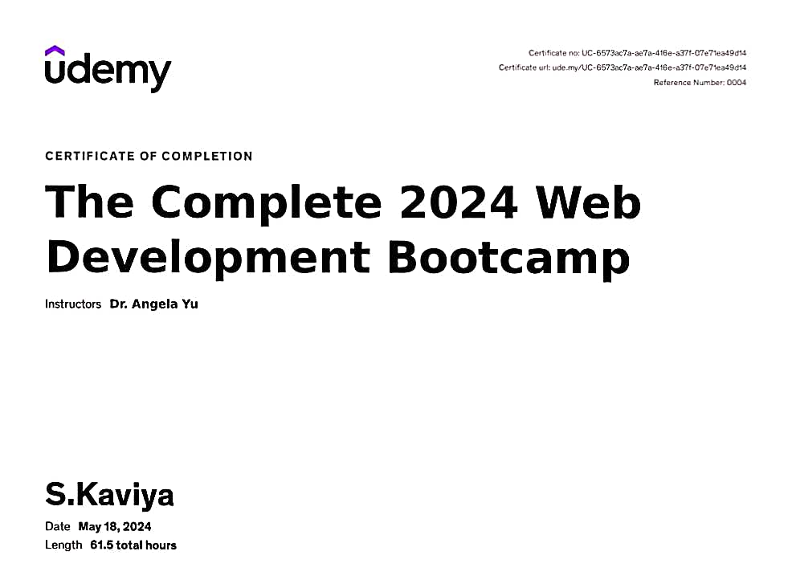
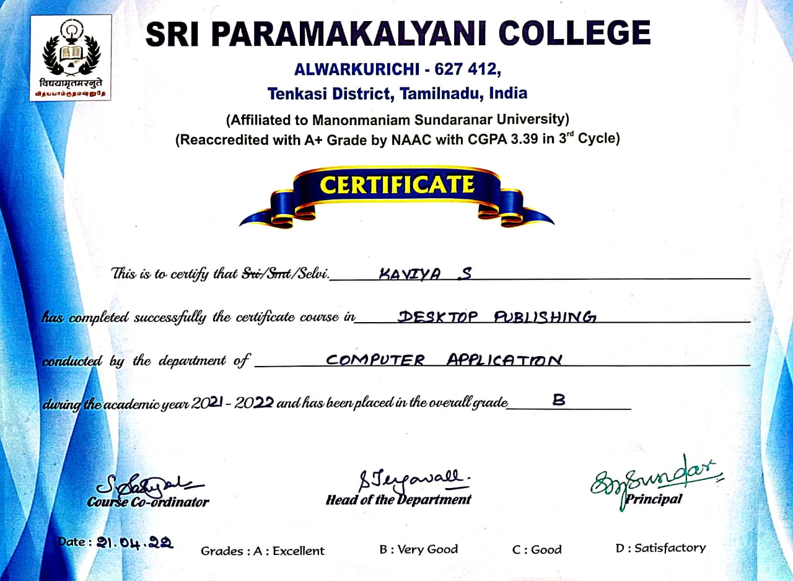
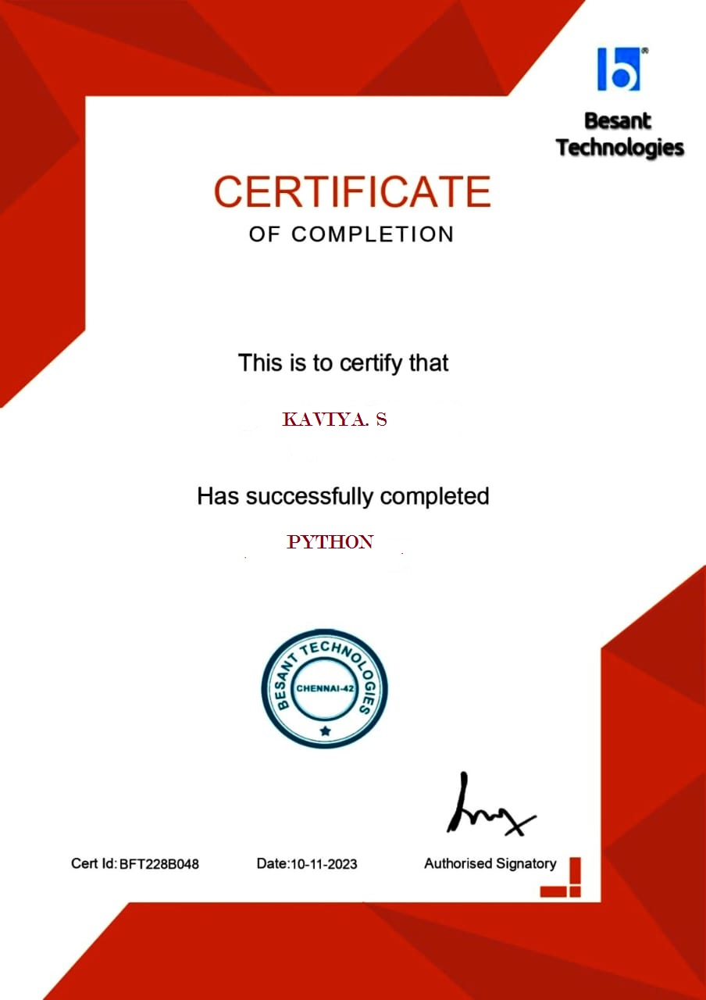

Web Development

I have just completed "The Complete
2024 Web Development Bootcamp"
on Udemy!This comprehensive course
has
equipped me with cutting-edge
skills
in web development, and I am
eager to
apply what I've learned
to my projects and career.
I want to express
my gratitude
to
Dr. Angela Yu
and the Udemy team for
this
amazing learning opportunity.
#Web Development
#Professional
Growth
#Continuous Learning
Desktop Publishing

I have successfully completed a
certificate
course in
Desktop
Publishing
from Sri Paramakalyani
College,Alwarkurichi.
The course was
conducted by the Department of
Computer
Application during
the academic year 2021-2022.
I have
been awarded an overall grade of 'B',
signifying a "Very Good" performance.
This course has equipped me with
essential skills
in desktop publishing,
enhancing my ability
to create
professional-quality documents and
publications.
I am excited to
apply this
knowledge in my future projects
and
professional endeavors.
PYTHON

I have successfully completed the Python
Training course
at Besant
Technologies. This program has
equipped me
with essential Python
programming skills and
knowledge,
enhancing my capabilities
in software development.
Completion
Date: November 10, 2023.